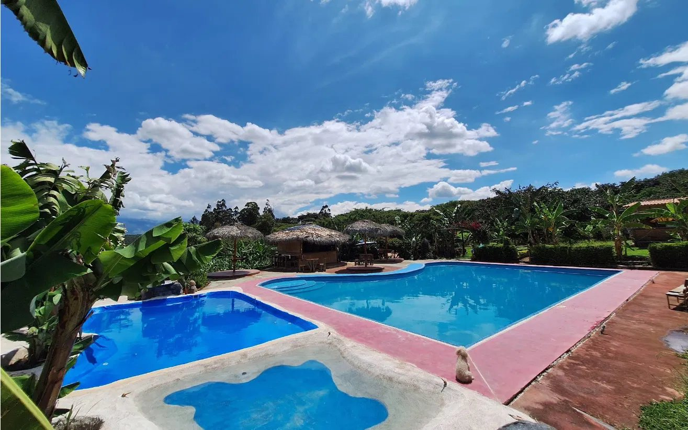
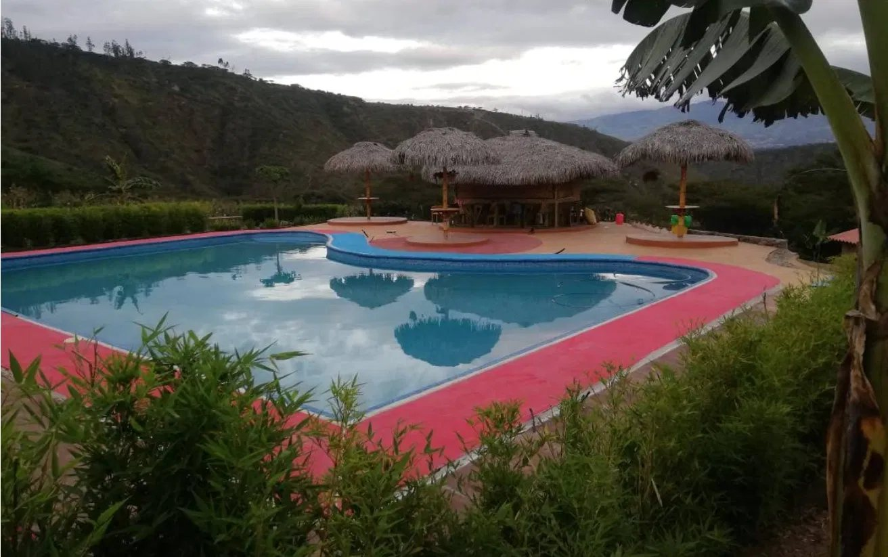
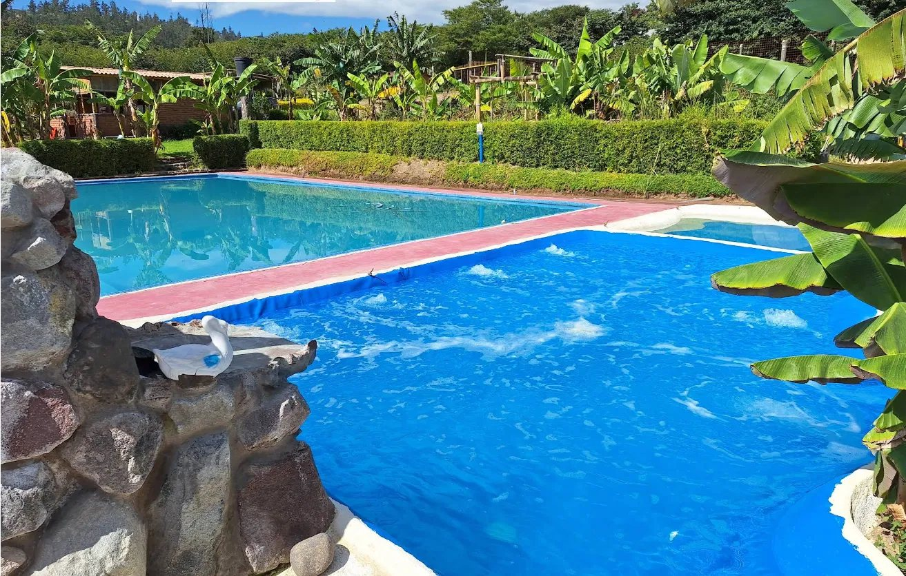
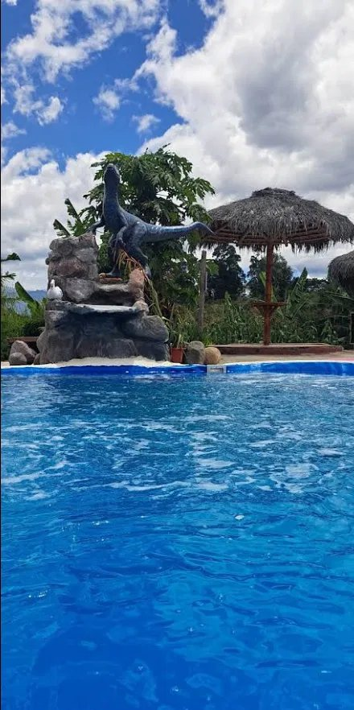
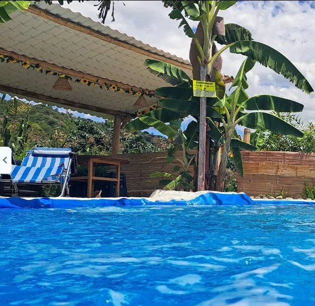

Naturaleza y espacios al aire libre en Quito
Los Algarrobos
Un lugar diferente para disfrutar rodeado de naturaleza.
Descubre sus piscinas, jardines y espacios al aire libre.
El lugar
En Los Algarrobos puedes disfrutar entre jardines, espacios abiertos y hermosas vistas, y su especialidad: las piscinas.
Un lugar para salir de la rutina, disfrutar del paisaje y compartir al aire libre.


Un entorno para disfrutar al aire libre
Piscinas, jardines y espacios abiertos rodeados de naturaleza, cerca de Quito: un plan diferente para desconectarte y compartir.
Espacios
Piscinas
Su especialidad: áreas acuáticas para disfrutar en medio del paisaje.
Zona de kiosco y sombra
Zonas con techo y sombrillas para descansar al aire libre.
Jardines
Áreas verdes y vegetación por todo el lugar.

Rincón de piedra con escultura
Un rincón diferente, con piedra y una escultura, para conocer.

Pabellón cubierto
Un espacio cubierto para descansar y compartir.
La disponibilidad y condiciones de uso deben consultarse directamente con el establecimiento.
Galería
Conoce algunos de los espacios y paisajes de Los Algarrobos.
- Piscinas y colinas
- Kiosco y sombrillas de paja
- Piscina y jardines
- Rincón de piedra
- Pabellón cubierto


4,4 de 5 en Google Maps · 55 reseñas observadas
Planifica tu visita
Comunícate directamente con Los Algarrobos para consultar horarios, condiciones de ingreso y disponibilidad.
Cómo llegar
Abre la ubicación de Los Algarrobos en Google Maps y consulta la mejor ruta desde tu punto de partida.
¿Quieres conocer Los Algarrobos?
Comunícate directamente con el establecimiento para consultar información, condiciones de ingreso y disponibilidad.
098 870 8338